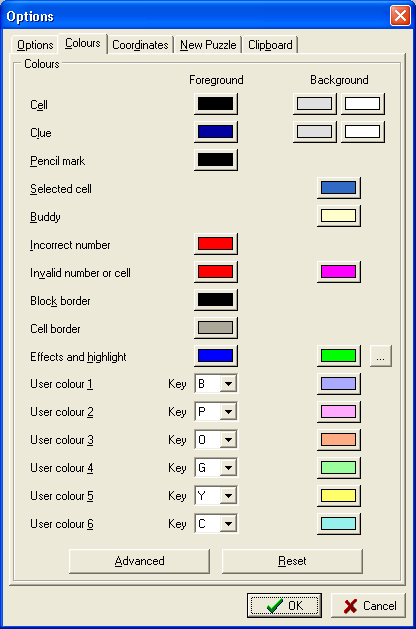

This page allows you to choose the colours used to draw various elements of the Sudoku board. The Reset button resets the colours to the default values.
Most of these options are self-explanatory, but the purpose of the User Colours may not be so obvious. These allow you to selective colour the background of cells. This can be extremely useful when searching for Forcing Chains, or Colouring Chains. For example, you can colour alternative links in a colouring chain with different colours when looking for exclusions. Pressing the associated key can be used as a short-cut to selecting the colour. In English, the default values for these keys indicate Blue, Pink, Orange and Green, but you may want to change these keys if you change the colours or do not use English.
The two background buttons for cell and clue allow different colours for odd and even numbered blocks, as some people find this pattern attractive.
The Advanced button allows for the specification of different colours for each number, and whether clues and/or big numbers and/or pencil marks should be coloured. See Advanced Colour Dialog.
The ellipsis button shows the Highlight Colours Dialog, which allows you to configure specific highlight colours for different numbers.